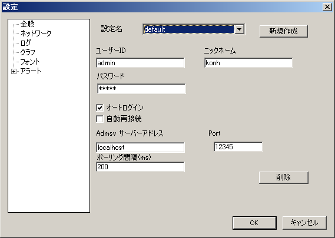

[トップ] [変更履歴] [目次] [用語] | [AdmCli] [ADMSV] [RSV] | [VCE-Log] [VCEモニター]
監視するサーバーマシン上でadmsvとrsvを実行しておかなければなりません。
また、監視するサーバーマシン(admsv,rsvが実行されている)のIPアドレス(またはマシン名)を入手しておきましょう。
ユーザー名、 パスワードについては admsvサーバーの管理者に尋ねてください。
(デフォルトではユーザー名admin, パスワードはtestkeyらしいです)
(1) [ツール]-[設定] メニューを選択し、 表示された設定ダイアログボックスの、 ツリービューの「ネットワーク」を選択します。
(2) ユーザー名、パスワードを入力します。ユーザー名、 パスワードについては admsv サーバーの管理者に尋ねてください。
(3) [ツール]-[設定] メニューを選択し、表示された設定ダイアログボックスの、ツリービューの「ネットワーク」を選択します。
(4) admsv サーバー名、ポートを入力します。サーバー名、ポートについては管理者に尋ねてください。
これらの設定が終了したら、OKボタンを押し、設定ダイアログボックスを終了してください。
その後、[ファイル]-[Login] にて admsv サーバーに接続する事が出来ます。
[参考:デフォルトの設定例] ユーザーID:admin ニックネーム:(設定なし) パスワード:testkey admsv サーバーアドレス:(admsvを実行しているlinuxのIPアドレス[例:192.168.1.20]) その他は変更しない

ログインに成功すれば、ホストウインドウにマシン名とIPアドレス、プロセスウインドウにadmsv(他にもいくつかの監視プロセス)が表示されます。